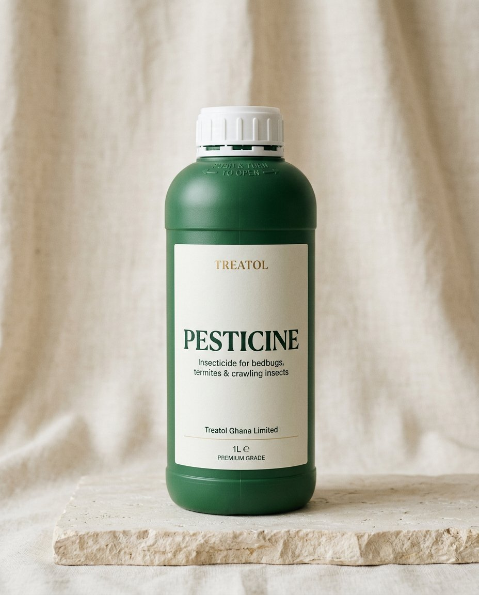

01
Pesticine
Insecticide
The most effective treatment we make for bedbugs, termites and crawling insects. For rooms that need to be lived in again — quietly, thoroughly, without theatre.
Enquire about Pesticine